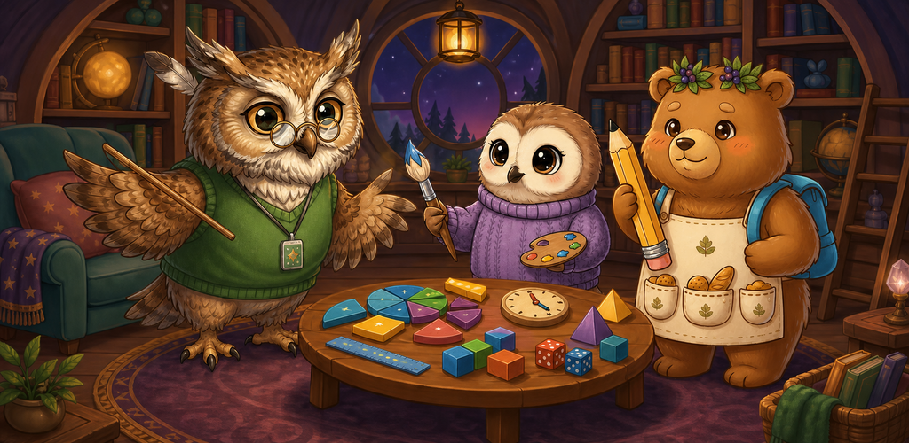
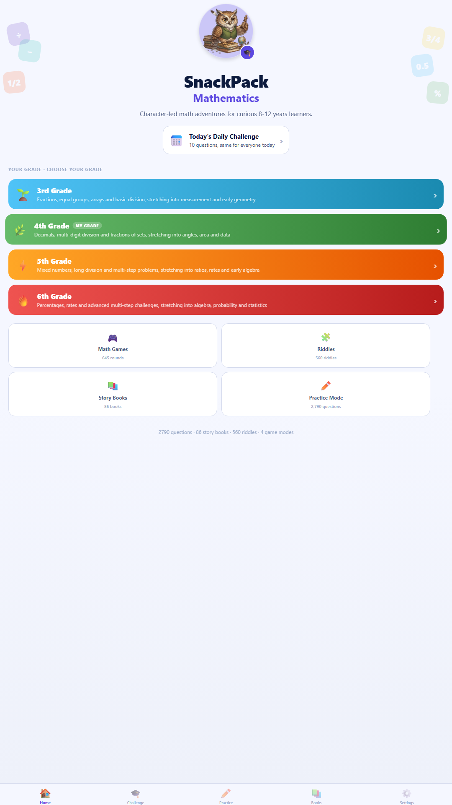
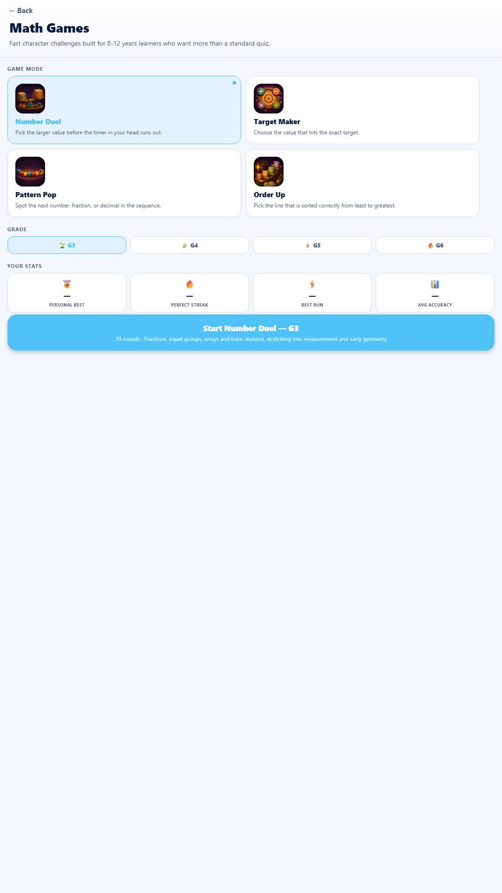
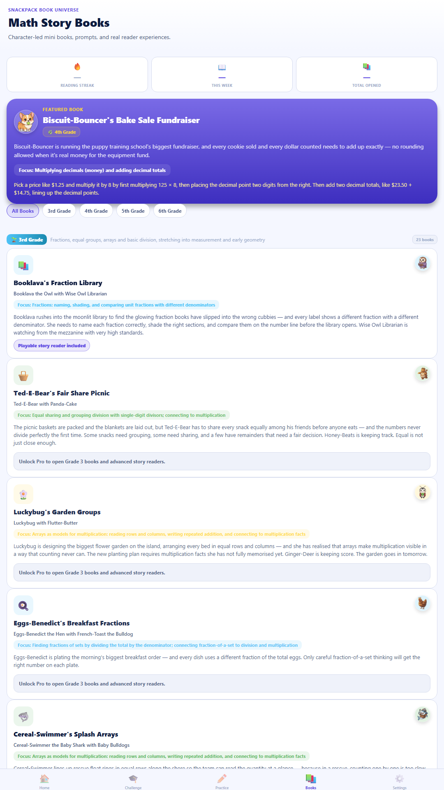
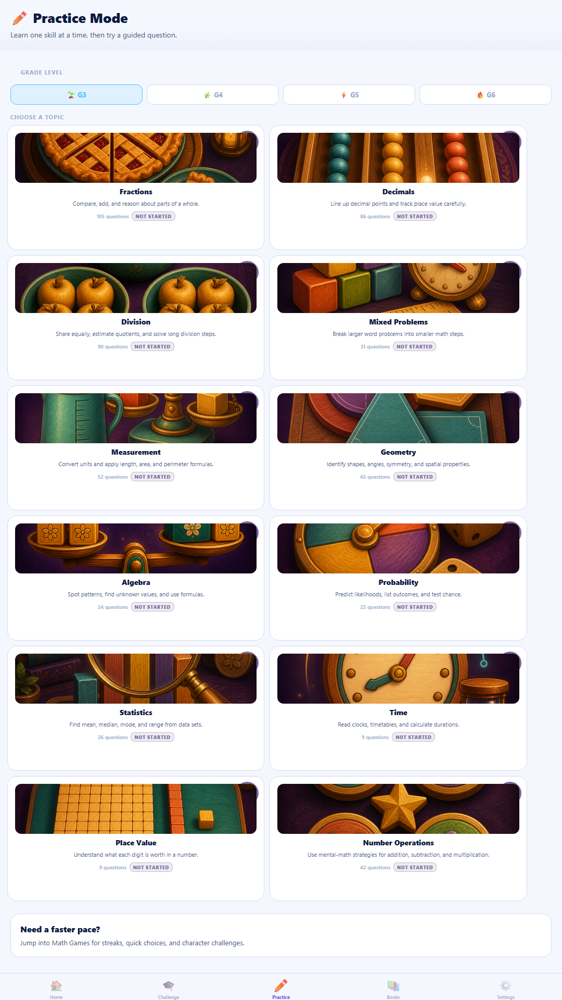
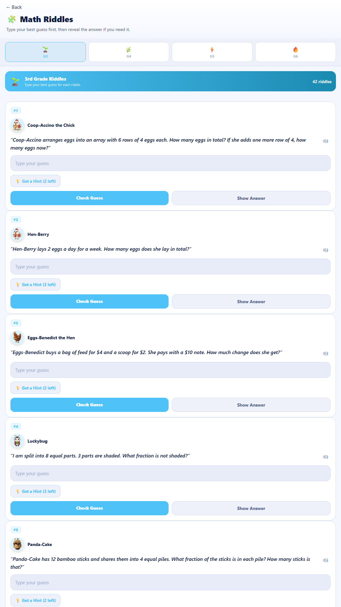
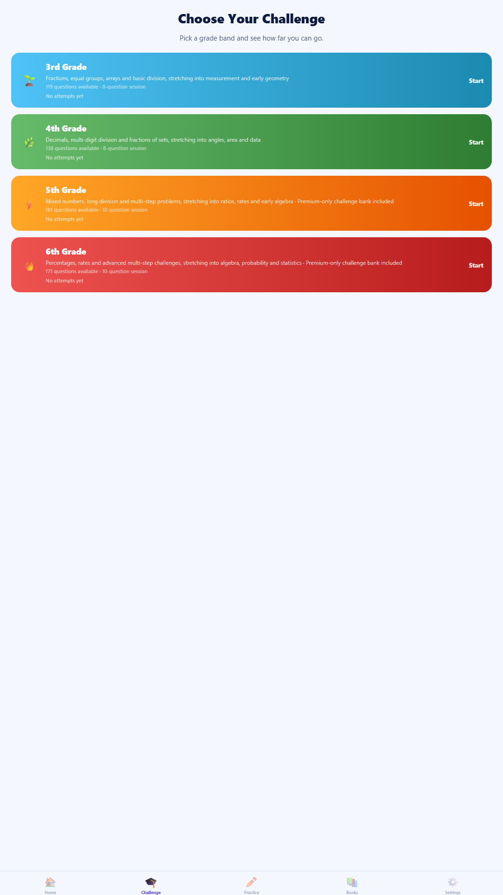

A vast, character-led maths adventure for curious learners ages 8–12. Build confidence across Grades 3–6 with practice, games, riddles, story books, daily challenges and a hands-on Math Lab.
2,790 questions645 game rounds86 story booksNo ads
SnackPack Mathematics gives learners several ways into the same idea. They can practise a topic directly, meet it inside a game, follow it through a character-led story, solve a riddle, or build it in Math Lab.
Four learning levels spanning Grade 3 to Grade 6, with optional stretch content.
Fourteen practice strands including fractions, decimals, division, geometry, algebra, probability, statistics, ratios, time and measurement.
Adaptive focus prompts based on genuine practice evidence—not one unlucky answer.
Worked explanations, hints, read-aloud support and a dyslexia-friendly font option.
Local progress, achievements and parent-facing curriculum coverage.

2,790practice and challenge questions645interactive game rounds560maths riddles86interactive story books168constructive Math Lab templates
Inside the app
Six ways to make maths feel approachable
Real screens from the current pre-launch build.

Choose a learning path

645 game rounds

86 story books

14 practice strands

560 riddles

Guided challenges
01
Practice with purpose
Choose a grade and topic, use worked hints when needed, and build mastery over time. A 16-question Skill Check helps find a sensible starting point.
02
Play and construct
Compare, order, balance and build through eight game modes and four Math Lab workspaces: number line, fractions, balance and data.
03
Read the maths
Characters turn abstract ideas into memorable situations, from Booklava’s Fraction Library to map measures, probability gardens and data mysteries.
For learners
Calm, clear and encouraging
Daily Challenge with the same ten questions for everyone that day.
Fresh 12-question Weekly Mastery Quest.
Achievements and streaks without ads or manipulative reward loops.
Six colour themes, reduced motion, haptic controls and dyslexia-friendly typography.
Read-aloud support for instructions and learning content.
For grown-ups
Progress that stays understandable
Parent-facing curriculum map and topic coverage.
Local progress dashboard, weak-area signals and session history.
Exportable progress summary for a parent or teacher.
No SnackPack account, no third-party ads and no behavioural analytics SDK.
Optional one-time Pro unlock—no subscription.
Pre-launch access
The app is ready for its final Google Play steps.
SnackPack Mathematics is not publicly live yet. The QR code is ready for the app’s testing or store link; the public download button will be added only when Google Play makes the listing available.
Not yet. It is in pre-launch testing. We will replace the launch-update button with the public Google Play listing as soon as the app is released.
What ages and grades is it designed for?
Roughly ages 8–12, covering Grade 3 to Grade 6 foundations, core practice and optional stretch material. Learners can choose their grade and work across topics at their own pace.
Is an account or internet connection required?
No SnackPack account is required. Progress and preferences are stored locally on the device. Store services need a connection for purchasing or restoring Pro, but the learning experience is designed to work locally.
Does the app have ads or subscriptions?
No third-party ads and no subscription. The planned Pro option is a one-time purchase that unlocks the complete library.
How is progress handled?
Practice, challenge, game, book and riddle progress is stored on the device. Grown-ups can view topic coverage and export a readable progress summary.